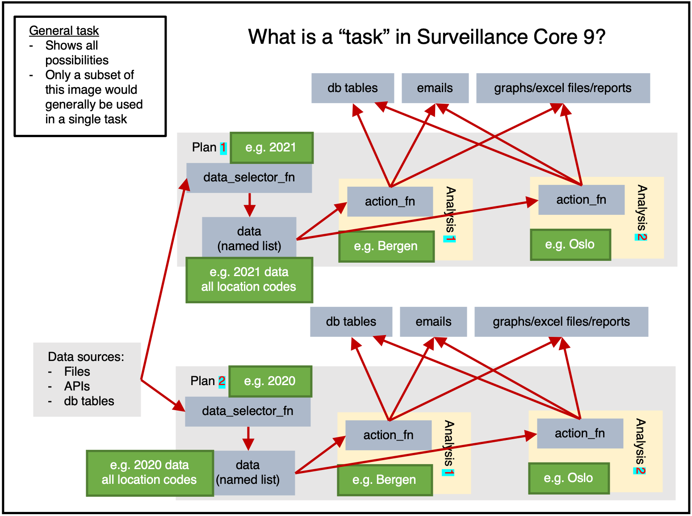
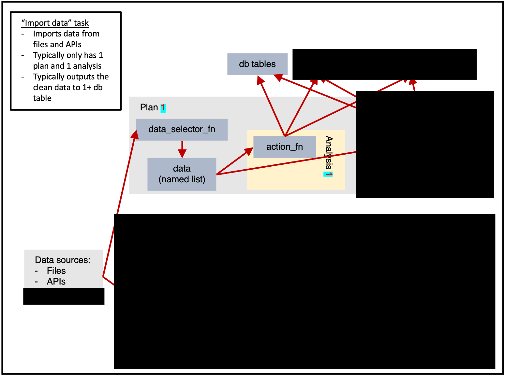
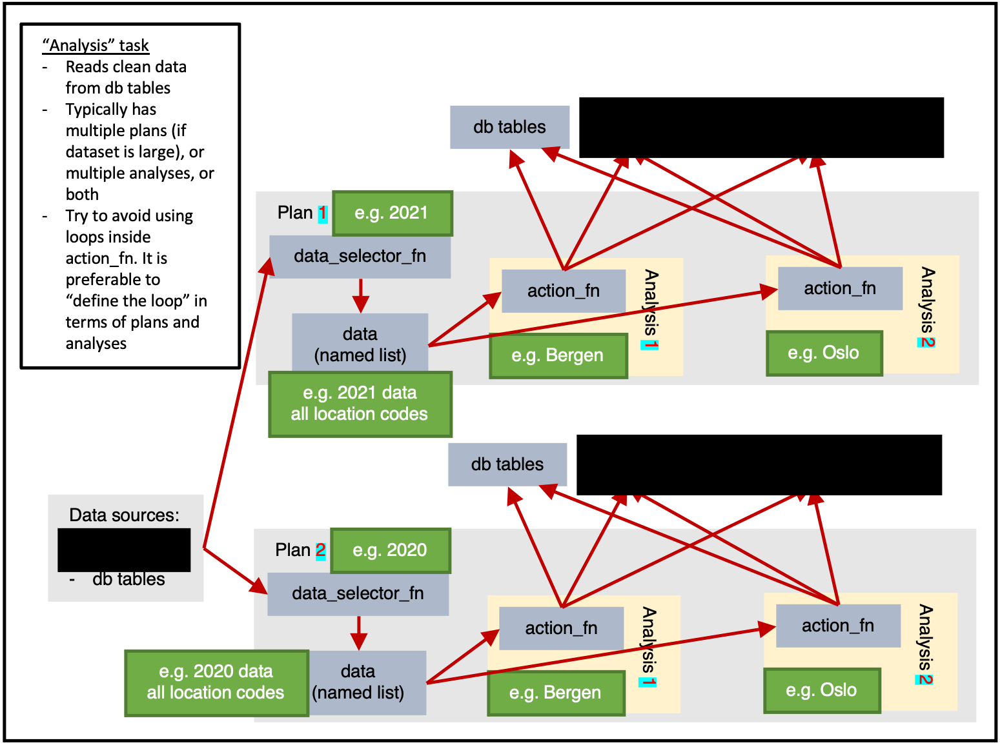
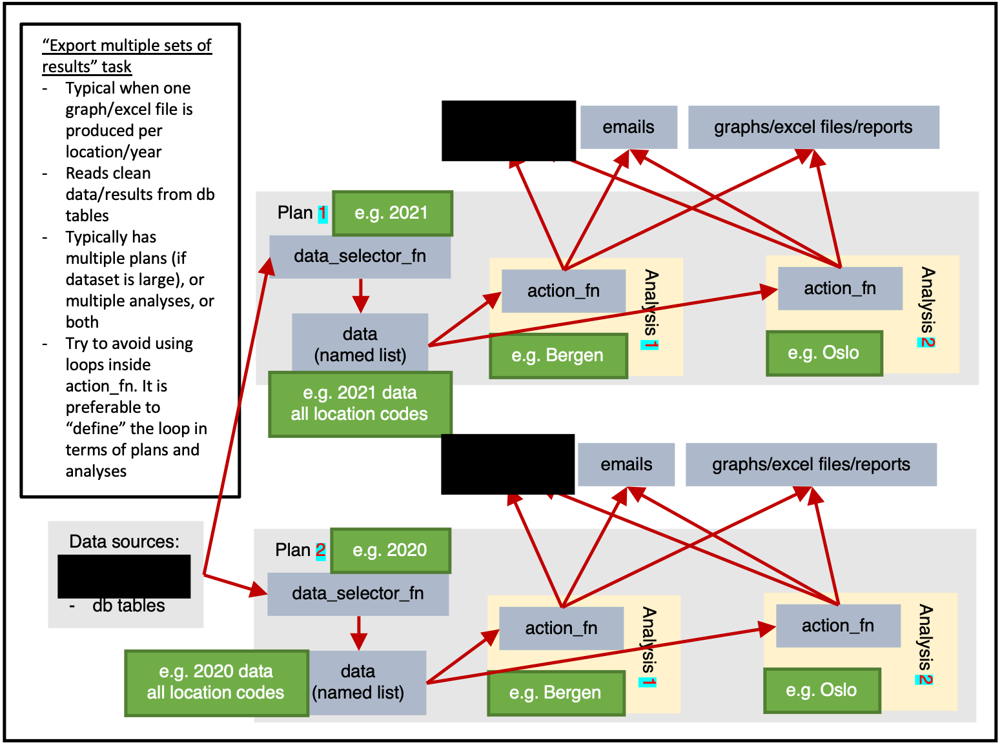
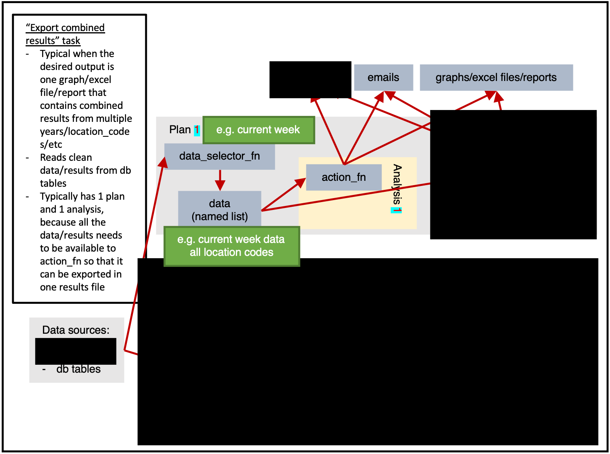

What is CS9?
Core Surveillance 9 (CS9) is an R framework for building real-time disease surveillance systems. It provides infrastructure for:
- Automated data pipelines for surveillance data
- Database-driven storage and retrieval
- Parallel processing and workflow orchestration
- Built-in support for common surveillance concepts
- Docker-ready deployment for operational systems
CS9 is aimed at public health organizations, epidemiologists, and researchers who need to process surveillance data on a regular, automated schedule.
When to use CS9
CS9 fits well when you need to:
- Process surveillance data on a regular schedule (daily, weekly)
- Maintain historical data with a proper database backend
- Run analysis pipelines where tasks depend on each other
- Deploy surveillance systems in a production environment
- Handle multiple data sources and analysis outputs
- Apply data validation and quality control systematically
Key concepts and definitions
| Object | Description |
|---|---|
| argset | A named list containing arguments passed between functions. |
| data_selector_fn | A function that extracts data for each plan. Takes argset and tables as arguments and returns a named list for use as data. |
| action_fn | The core function that performs analysis work. Takes data (from data_selector_fn), argset, and tables as arguments. |
| analysis | Individual computation within a plan. Combines 1 argset with 1 action_fn. |
| plan | Data processing unit containing 1 data-pull (using data_selector_fn) and multiple analyses. |
| task | The fundamental unit scheduled in CS9. Contains multiple plans and can run in parallel. This is what Airflow schedules. |
| schema | Database table definition with field types, validation rules, and access control. |
Surveillance system architecture
CS9 organizes surveillance work into a three-level hierarchy:
Tasks → Plans → Analyses
- Tasks are the unit of scheduled work — things like “download weather data”, “calculate disease trends”, or “generate reports”.
- Plans are data processing units within a task, typically organized by time period, geographic area, or data subset.
- Analyses are the individual computations within a plan — the actual work performed on the extracted data.
Example workflow
A typical CS9 surveillance system might include:
- Data import: Download data from external APIs or files
- Data cleaning: Validate, standardize, and quality-check incoming data
- Analysis: Calculate surveillance indicators, trends, or alerts
- Reporting: Generate outputs such as Excel files, plots, or automated reports
- Delivery: Send results by email, upload to a website, or trigger alerts

Figure 1 shows the available options within a task.
Data can be read from any source. Within a plan,
data_selector_fn extracts the data once (a
single data-pull). That data is then passed to each analysis, which
calls action_fn with:
- the extracted data
- the argset
- the tables
The action_fn can then:
- Write data or results to database tables
- Send emails
- Export graphs, Excel files, reports, or other files
A single task would typically do only a subset of these things.
Plan-heavy or analysis-heavy tasks?
A plan-heavy task has many plans with few analyses each. An analysis-heavy task has few plans with many analyses each.
Data-pulls are relatively slow, so fewer plans means less total time waiting for data. If each data-pull extracts a larger dataset, the analyses can subset it as needed (via argsets). Analysis-heavy tasks are therefore generally faster, at the cost of higher RAM usage.
If RAM is limited, use more plans with smaller data-pulls instead.
Figure 1 shows only 2 location-based
analyses. In practice, Norway had 356 municipalities in 2021. If
figure 1 had 2 plans (one for 2021 data, one for
2020 data) with 356 analyses each (one per location_code),
that would be an analysis-heavy approach.
Other vignettes
-
Installation and setup:
vignette("installation")covers database configuration and environment variables -
Package structure:
vignette("file-layout")explains how to organize your implementation files -
Creating tasks:
vignette("creating-a-task")walks through building your first surveillance task step by step
Example
The following example walks through designing and implementing a weather surveillance task.
Surveillance system setup
Start by creating a surveillance system. This object coordinates tables and tasks.
ss <- cs9::SurveillanceSystem_v9$new()Database table definition
As documented in more detail here, we create a database table for weather data and add it to the surveillance system.
ss$add_table(
name_access = c("anon"),
name_grouping = "example_weather",
name_variant = NULL,
field_types = c(
"granularity_time" = "TEXT",
"granularity_geo" = "TEXT",
"country_iso3" = "TEXT",
"location_code" = "TEXT",
"border" = "INTEGER",
"age" = "TEXT",
"sex" = "TEXT",
"isoyear" = "INTEGER",
"isoweek" = "INTEGER",
"isoyearweek" = "TEXT",
"season" = "TEXT",
"seasonweek" = "DOUBLE",
"calyear" = "INTEGER",
"calmonth" = "INTEGER",
"calyearmonth" = "TEXT",
"date" = "DATE",
"tg" = "DOUBLE",
"tx" = "DOUBLE",
"tn" = "DOUBLE"
),
keys = c(
"granularity_time",
"location_code",
"date",
"age",
"sex"
),
validator_field_types = csdb::validator_field_types_csfmt_rts_data_v1,
validator_field_contents = csdb::validator_field_contents_csfmt_rts_data_v1
)Task configuration
Tasks are registered with ss$add_task:
# tm_run_task("example_weather_import_data_from_api")
ss$add_task(
name_grouping = "example_weather",
name_action = "import_data_from_api",
name_variant = NULL,
cores = 1,
plan_analysis_fn_name = NULL, # "PACKAGE::TASK_NAME_plan_analysis"
for_each_plan = plnr::expand_list(
location_code = "county03" # fhidata::norway_locations_names()[granularity_geo %in% c("county")]$location_code
),
for_each_analysis = NULL,
universal_argset = NULL,
upsert_at_end_of_each_plan = FALSE,
insert_at_end_of_each_plan = FALSE,
action_fn_name = "example_weather_import_data_from_api_action",
data_selector_fn_name = "example_weather_import_data_from_api_data_selector",
tables = list(
# input
# output
"anon_example_weather" = ss$tables$anon_example_weather
)
)Several parameters are worth explaining in more detail.
for_each_plan
for_each_plan expects a list. Each element corresponds
to one plan; its values are added to the argset for every analysis
inside that plan.
The following code produces 4 plans with 1 analysis each, where each
analysis receives argset$var_1 and
argset$var_2:
for_each_plan <- list()
for_each_plan[[1]] <- list(
var_1 = 1,
var_2 = "a"
)
for_each_plan[[2]] <- list(
var_1 = 2,
var_2 = "b"
)
for_each_plan[[3]] <- list(
var_1 = 1,
var_2 = "a"
)
for_each_plan[[4]] <- list(
var_1 = 2,
var_2 = "b"
)Every task needs at least 1 plan. The simplest plan possible is:
plnr::expand_list(
x = 1
)
#> [[1]]
#> [[1]]$x
#> [1] 1plnr::expand_list
plnr::expand_list works like expand.grid,
but returns a list instead of a data frame.
The four-element example above can be written more concisely:
for_each_plan <- plnr::expand_list(
var_1 = c(1,2),
var_2 = c("a", "b")
)
for_each_plan
#> [[1]]
#> [[1]]$var_1
#> [1] 1
#>
#> [[1]]$var_2
#> [1] "a"
#>
#>
#> [[2]]
#> [[2]]$var_1
#> [1] 2
#>
#> [[2]]$var_2
#> [1] "a"
#>
#>
#> [[3]]
#> [[3]]$var_1
#> [1] 1
#>
#> [[3]]$var_2
#> [1] "b"
#>
#>
#> [[4]]
#> [[4]]$var_1
#> [1] 2
#>
#> [[4]]$var_2
#> [1] "b"for_each_analysis
for_each_plan generates
length(for_each_plan) plans. for_each_analysis
works the same way, but generates analyses within each
plan.
upsert_at_end_of_each_plan
When TRUE and tables contains a table named
output, the return value of action_fn is
upserted to tables$output at the end of each
plan.
When TRUE and action_fn returns a named
list, each element is upserted to the corresponding
tables$NAME_FROM_LIST at the end of each
plan.
If you upsert or insert manually from within action_fn,
you can only do so at the end of each analysis.
insert_at_end_of_each_plan
Same as upsert_at_end_of_each_plan, but inserts instead
of upserts.
If you insert manually from within action_fn, you can
only do so at the end of each analysis.
action_fn_name
A character string naming the action function, preferably including the package name.
data_selector_fn
The data_selector_fn extracts data for each plan.
The block inside if(plnr::is_run_directly()){ is for
interactive development. Running the function manually executes that
block, which loads argset and tables into your
environment so you can step through the rest of the code.
index_plan <- 1
argset <- ss$shortcut_get_argset("example_weather_import_data_from_api", index_plan = index_plan)
tables <- ss$shortcut_get_tables("example_weather_import_data_from_api")
print(argset)
#> $`**universal**`
#> [1] "*"
#>
#> $`**plan**`
#> [1] "*"
#>
#> $location_code
#> [1] "county03"
#>
#> $`**analysis**`
#> [1] "*"
#>
#> $`**automatic**`
#> [1] "*"
#>
#> $index
#> [1] 1
#>
#> $today
#> [1] "2025-08-21"
#>
#> $yesterday
#> [1] "2025-08-20"
#>
#> $index_plan
#> [1] 1
#>
#> $index_analysis
#> [1] 1
#>
#> $first_analysis
#> [1] TRUE
#>
#> $last_analysis
#> [1] TRUE
#>
#> $within_plan_first_analysis
#> [1] TRUE
#>
#> $within_plan_last_analysis
#> [1] TRUE
print(tables)
#> $anon_example_weather
#> public.anon_example_weather (disconnected)
#>
#> 1: granularity_time (TEXT) (KEY)
#> 2: granularity_geo (TEXT)
#> 3: country_iso3 (TEXT)
#> 4: location_code (TEXT) (KEY)
#> 5: border (INTEGER)
#> 6: age (TEXT) (KEY)
#> 7: sex (TEXT) (KEY)
#> 8: isoyear (INTEGER)
#> 9: isoweek (INTEGER)
#> 10: isoyearweek (TEXT)
#> 11: season (TEXT)
#> 12: seasonweek (DOUBLE)
#> 13: calyear (INTEGER)
#> 14: calmonth (INTEGER)
#> 15: calyearmonth (TEXT)
#> 16: date (DATE) (KEY)
#> 17: tg (DOUBLE)
#> 18: tx (DOUBLE)
#> 19: tn (DOUBLE)
#> 20: auto_last_updated_datetime (DATETIME)
# **** data_selector **** ----
#' example_weather_import_data_from_api (data selector)
#' @param argset Argset
#' @param tables DB tables
#' @export
example_weather_import_data_from_api_data_selector = function(argset, tables){
if(plnr::is_run_directly()){
# global$ss$shortcut_get_plans_argsets_as_dt("example_weather_import_data_from_api")
index_plan <- 1
argset <- ss$shortcut_get_argset("example_weather_import_data_from_api", index_plan = index_plan)
tables <- ss$shortcut_get_tables("example_weather_import_data_from_api")
}
# find the mid lat/long for the specified location_code
gps <- fhimaps::norway_nuts3_map_b2020_default_dt[location_code == argset$location_code,.(
lat = mean(lat),
long = mean(long)
)]
# download the forecast for the specified location_code
d <- httr::GET(glue::glue("https://api.met.no/weatherapi/locationforecast/2.0/classic?lat={gps$lat}&lon={gps$long}"), httr::content_type_xml())
d <- xml2::read_xml(d$content)
# The variable returned must be a named list
retval <- list(
"data" = d
)
retval
}action_fn
The if(plnr::is_run_directly()){ block works the same
way here: running the function manually loads data,
argset, and tables so you can work through the
analysis interactively.
index_plan <- 1
index_analysis <- 1
data <- ss$shortcut_get_data("example_weather_import_data_from_api", index_plan = index_plan)
argset <- ss$shortcut_get_argset("example_weather_import_data_from_api", index_plan = index_plan, index_analysis = index_analysis)
tables <- ss$shortcut_get_tables("example_weather_import_data_from_api")
print(data)
#> $data
#> {xml_document}
#> <weatherdata noNamespaceSchemaLocation="https://schema.api.met.no/schemas/weatherapi-0.4.xsd" created="2025-08-21T13:28:23Z" xmlns:xsi="http://www.w3.org/2001/XMLSchema-instance">
#> [1] <meta>\n <model name="met_public_forecast" termin="2025-08-21T13:00:00Z" ...
#> [2] <product class="pointData">\n <time datatype="forecast" from="2025-08-21 ...
#>
#> $hash
#> $hash$current
#> [1] "fa7c1fd90a6d9bf24040ae24919e6972"
#>
#> $hash$current_elements
#> $hash$current_elements$data
#> [1] "edf868d91cd1f5fe47b57b2aeb1d010d"
print(argset)
#> $`**universal**`
#> [1] "*"
#>
#> $`**plan**`
#> [1] "*"
#>
#> $location_code
#> [1] "county03"
#>
#> $`**analysis**`
#> [1] "*"
#>
#> $`**automatic**`
#> [1] "*"
#>
#> $index
#> [1] 1
#>
#> $today
#> [1] "2025-08-21"
#>
#> $yesterday
#> [1] "2025-08-20"
#>
#> $index_plan
#> [1] 1
#>
#> $index_analysis
#> [1] 1
#>
#> $first_analysis
#> [1] TRUE
#>
#> $last_analysis
#> [1] TRUE
#>
#> $within_plan_first_analysis
#> [1] TRUE
#>
#> $within_plan_last_analysis
#> [1] TRUE
print(tables)
#> $anon_example_weather
#> public.anon_example_weather (disconnected)
#>
#> 1: granularity_time (TEXT) (KEY)
#> 2: granularity_geo (TEXT)
#> 3: country_iso3 (TEXT)
#> 4: location_code (TEXT) (KEY)
#> 5: border (INTEGER)
#> 6: age (TEXT) (KEY)
#> 7: sex (TEXT) (KEY)
#> 8: isoyear (INTEGER)
#> 9: isoweek (INTEGER)
#> 10: isoyearweek (TEXT)
#> 11: season (TEXT)
#> 12: seasonweek (DOUBLE)
#> 13: calyear (INTEGER)
#> 14: calmonth (INTEGER)
#> 15: calyearmonth (TEXT)
#> 16: date (DATE) (KEY)
#> 17: tg (DOUBLE)
#> 18: tx (DOUBLE)
#> 19: tn (DOUBLE)
#> 20: auto_last_updated_datetime (DATETIME)
# **** action **** ----
#' example_weather_import_data_from_api (action)
#' @param data Data
#' @param argset Argset
#' @param tables DB tables
#' @export
example_weather_import_data_from_api_action <- function(data, argset, tables) {
# tm_run_task("example_weather_import_data_from_api")
if(plnr::is_run_directly()){
# global$ss$shortcut_get_plans_argsets_as_dt("example_weather_import_data_from_api")
index_plan <- 1
index_analysis <- 1
data <- ss$shortcut_get_data("example_weather_import_data_from_api", index_plan = index_plan)
argset <- ss$shortcut_get_argset("example_weather_import_data_from_api", index_plan = index_plan, index_analysis = index_analysis)
tables <- ss$shortcut_get_tables("example_weather_import_data_from_api")
}
# code goes here
# special case that runs before everything
if(argset$first_analysis == TRUE){
}
a <- data$data
baz <- xml2::xml_find_all(a, ".//maxTemperature")
res <- vector("list", length = length(baz))
for (i in seq_along(baz)) {
parent <- xml2::xml_parent(baz[[i]])
grandparent <- xml2::xml_parent(parent)
time_from <- xml2::xml_attr(grandparent, "from")
time_to <- xml2::xml_attr(grandparent, "to")
x <- xml2::xml_find_all(parent, ".//minTemperature")
temp_min <- xml2::xml_attr(x, "value")
x <- xml2::xml_find_all(parent, ".//maxTemperature")
temp_max <- xml2::xml_attr(x, "value")
res[[i]] <- data.frame(
time_from = as.character(time_from),
time_to = as.character(time_to),
tx = as.numeric(temp_max),
tn = as.numeric(temp_min)
)
}
res <- rbindlist(res)
res <- res[stringr::str_sub(time_from, 12, 13) %in% c("00", "06", "12", "18")]
res[, date := as.Date(stringr::str_sub(time_from, 1, 10))]
res[, N := .N, by = date]
res <- res[N == 4]
res <- res[
,
.(
tg = NA,
tx = max(tx),
tn = min(tn)
),
keyby = .(date)
]
# we look at the downloaded data
print("Data after downloading")
print(res)
# we now need to format it
res[, granularity_time := "day"]
res[, sex := "total"]
res[, age := "total"]
res[, location_code := argset$location_code]
res[, border := 2020]
# fill in missing structural variables
cstidy::set_csfmt_rts_data_v1(res)
# we look at the downloaded data
print("Data after missing structural variables filled in")
print(res)
# put data in db table
# tables$TABLE_NAME$insert_data(d)
tables$anon_example_weather$upsert_data(res)
# tables$TABLE_NAME$drop_all_rows_and_then_upsert_data(d)
# special case that runs after everything
# copy to anon_web?
if(argset$last_analysis == TRUE){
# cs9::copy_into_new_table_where(
# table_from = "anon_X",
# table_to = "anon_web_X"
# )
}
}Run the task
ss$run_task("example_weather_import_data_from_api")
#> task: example_weather_import_data_from_api
#> Running task=example_weather_import_data_from_api with plans=1 and analyses=1
#> plans=sequential, argset=sequential with cores=1
#>
#> [1] "Data after downloading"
#> Key: <date>
#> date tg tx tn
#> <Date> <lgcl> <num> <num>
#> 1: 2025-08-22 NA 16.0 8.8
#> 2: 2025-08-23 NA 17.6 8.0
#> 3: 2025-08-24 NA 18.4 9.8
#> 4: 2025-08-25 NA 18.1 8.8
#> 5: 2025-08-26 NA 18.8 8.9
#> 6: 2025-08-27 NA 19.7 9.2
#> 7: 2025-08-28 NA 20.4 10.2
#> 8: 2025-08-29 NA 19.0 10.1
#> 9: 2025-08-30 NA 16.9 12.1
#> [1] "Data after missing structural variables filled in"
#> granularity_time granularity_geo country_iso3 location_code border age
#> <char> <char> <char> <char> <int> <char>
#> 1: day county nor county03 2020 total
#> 2: day county nor county03 2020 total
#> 3: day county nor county03 2020 total
#> 4: day county nor county03 2020 total
#> 5: day county nor county03 2020 total
#> 6: day county nor county03 2020 total
#> 7: day county nor county03 2020 total
#> 8: day county nor county03 2020 total
#> 9: day county nor county03 2020 total
#> sex isoyear isoweek isoyearweek season seasonweek calyear calmonth
#> <char> <int> <int> <char> <char> <num> <int> <int>
#> 1: total NA NA <NA> <NA> NA NA NA
#> 2: total NA NA <NA> <NA> NA NA NA
#> 3: total NA NA <NA> <NA> NA NA NA
#> 4: total NA NA <NA> <NA> NA NA NA
#> 5: total NA NA <NA> <NA> NA NA NA
#> 6: total NA NA <NA> <NA> NA NA NA
#> 7: total NA NA <NA> <NA> NA NA NA
#> 8: total NA NA <NA> <NA> NA NA NA
#> 9: total NA NA <NA> <NA> NA NA NA
#> calyearmonth date tg tx tn
#> <char> <Date> <lgcl> <num> <num>
#> 1: <NA> 2025-08-22 NA 16.0 8.8
#> 2: <NA> 2025-08-23 NA 17.6 8.0
#> 3: <NA> 2025-08-24 NA 18.4 9.8
#> 4: <NA> 2025-08-25 NA 18.1 8.8
#> 5: <NA> 2025-08-26 NA 18.8 8.9
#> 6: <NA> 2025-08-27 NA 19.7 9.2
#> 7: <NA> 2025-08-28 NA 20.4 10.2
#> 8: <NA> 2025-08-29 NA 19.0 10.1
#> 9: <NA> 2025-08-30 NA 16.9 12.1
#> Error in super$upsert_data(newdata, drop_indexes, verbose): upsert_load_data_infile not validated in anon_example_weather. granularity_timeCommon task patterns
Importing data

ss$add_task(
name_grouping = "example",
name_action = "import_data",
name_variant = NULL,
cores = 1,
plan_analysis_fn_name = NULL,
for_each_plan = plnr::expand_list(
x = 1
),
for_each_analysis = NULL,
universal_argset = list(
folder = cs9::path("input", "example")
),
upsert_at_end_of_each_plan = FALSE,
insert_at_end_of_each_plan = FALSE,
action_fn_name = "example_import_data_action",
data_selector_fn_name = "example_import_data_data_selector",
tables = list(
# input
# output
"output" = ss$tables$output
)
)Analysis

ss$add_task(
name_grouping = "example",
name_action = "analysis",
name_variant = NULL,
cores = 1,
plan_analysis_fn_name = NULL,
for_each_plan = plnr::expand_list(
location_code = csdata::nor_locations_names()[granularity_geo %in% c("county")]$location_code
),
for_each_analysis = NULL,
universal_argset = NULL,
upsert_at_end_of_each_plan = FALSE,
insert_at_end_of_each_plan = FALSE,
action_fn_name = "example_analysis_action",
data_selector_fn_name = "example_analysis_data_selector",
tables = list(
# input
"input" = ss$tables$input,
# output
"output" = ss$tables
)
)Exporting multiple sets of results

ss$add_task(
name_grouping = "example",
name_action = "export_results",
name_variant = NULL,
cores = 1,
plan_analysis_fn_name = NULL,
for_each_plan = plnr::expand_list(
location_code = csdata::nor_locations_names()[granularity_geo %in% c("county")]$location_code
),
for_each_analysis = NULL,
universal_argset = list(
folder = cs9::path("output", "example")
),
upsert_at_end_of_each_plan = FALSE,
insert_at_end_of_each_plan = FALSE,
action_fn_name = "example_export_results_action",
data_selector_fn_name = "example_export_results_data_selector",
tables = list(
# input
"input" = ss$tables$input
# output
)
)Exporting combined results

ss$tables(
name_grouping = "example",
name_action = "export_results",
name_variant = NULL,
cores = 1,
plan_analysis_fn_name = NULL,
for_each_plan = plnr::expand_list(
x = 1
),
for_each_analysis = NULL,
universal_argset = list(
folder = cs9::path("output", "example"),
granularity_geos = c("nation", "county")
),
upsert_at_end_of_each_plan = FALSE,
insert_at_end_of_each_plan = FALSE,
action_fn_name = "example_export_results_action",
data_selector_fn_name = "example_export_results_data_selector",
tables = list(
# input
"input" = ss$tables$input
# output
)
)Deployment
A typical development-to-production cycle looks like this:
-
Development: Use
devtools::load_all()for interactive development -
Testing: Run individual tasks with
global$ss$run_task("task_name") - Production: Deploy in Docker containers with Airflow scheduling
- Monitoring: Track execution through the built-in logging tables
Getting started
The recommended starting point is the cs9example repository, which provides a working surveillance system you can adapt:
- Clone the cs9example repository
- Do a global find/replace of
"cs9example"with your package name - Update the table definitions in
03_tables.Rfor your data - Update the task definitions in
04_tasks.Rfor your analyses - Implement your task functions following the same patterns
Next steps
- Installation — database and environment setup
- Creating a task — step-by-step task implementation
- File layout — how to organize your package files